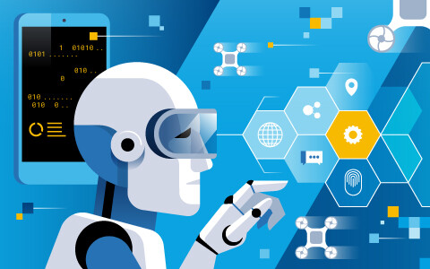

Сферы применения ИИ достаточно широки и охватывают как привычные слуху технологии, так и появляющиеся новые направления, далекие от массового применения, иначе говоря, это весь спектр решений, от пылесосов до космических станций. Можно разделить все их разнообразие по критерию ключевых точек развития.
ИИ — это не монолитная предметная область. Более того, некоторые технологические направления ИИ фигурируют как новые подотрасли экономики и обособленные сущности, одновременно обслуживая большинство сфер в экономике.
Основные коммерческие сферы применения технологий искусственного интеллекта.
Развитие применения использования ИИ ведет к адаптации технологий в классических отраслях экономики по всей цепочке создания ценности и преобразует их, приводя к алгоритмизированию практически всего функционала, от логистики до управления компанией.
ИИ в борьбе с мошенничеством.
11 июля 2019 года стало известно о том, что всего через два года искусственный интеллект и машинное обучение будут использоваться для противодействия мошенничеству в три раза чаще, чем на июль 2019 года. Такие данные были получены в ходе совместного исследования компании SAS и Ассоциации сертифицированных специалистов по расследованию хищений и мошенничества (Association of Certified Fraud Examiners, ACFE). На июль 2019 года такие антифрод-инструменты уже используют в 13% организаций, принявших участие в опросе, и в еще 25% заявили, что планируют их внедрить в течение ближайшего года-двух. Подробнее здесь.
ИИ в электроэнергетики.
На уровне проектирования: улучшенное прогнозирование генерации и спроса на энергоресурсы, оценка надежности энергогенерирующего оборудования, автоматизация повышения генерации при скачке спроса.
На уровне производства: оптимизация профилактического обслуживания оборудования, повышение эффективности генерации, снижение потерь, предотвращение краж энергоресурсов.
На уровне продвижения: оптимизация ценообразования в зависимости от времени дня и динамическая тарификация.
На уровне предоставления обслуживания: автоматический выбор наиболее выгодного поставщика, подробная статистика потребления, автоматизированное обслуживание
клиентов, оптимизация энергопотребления с учетом привычек и поведения клиента.
ИИ в производственной сфере.
На уровне проектирования: повышение эффективности разработки новых продуктов, автоматизированная оценка поставщиков и анализ требований к запчастям и деталям.
На уровне производства: совершенствование процесса исполнения задач, автоматизация сборочных линий, снижение количества ошибок, уменьшение сроков доставки сырья.
На уровне продвижения: прогнозирование объемов предоставления услуг поддержки и обслуживания, управление ценообразованием.
На уровне предоставления обслуживания: улучшение планирования маршрутов парка транспортных средств, спроса на ресурсы автопарка, повышение качества подготовки сервисных инженеров.
Искусственный интеллект (ИИ) в медицине — использует алгоритмы и программное обеспечение для аппроксимации человеческих знаний при анализе сложных медицинских данных. Основной целью приложений, связанных со здоровьем человека, является анализ взаимосвязи между методами профилактики или лечения и результатами лечения пациентов. Были разработаны и применены на практике программы искусственного интеллекта, которые проводят диагностику процессов, разработку протоколов лечения, разработку лекарственных средств, мониторинг состояния пациента. Здравоохранение остается одной из главных областей инвестирования в ИИ.